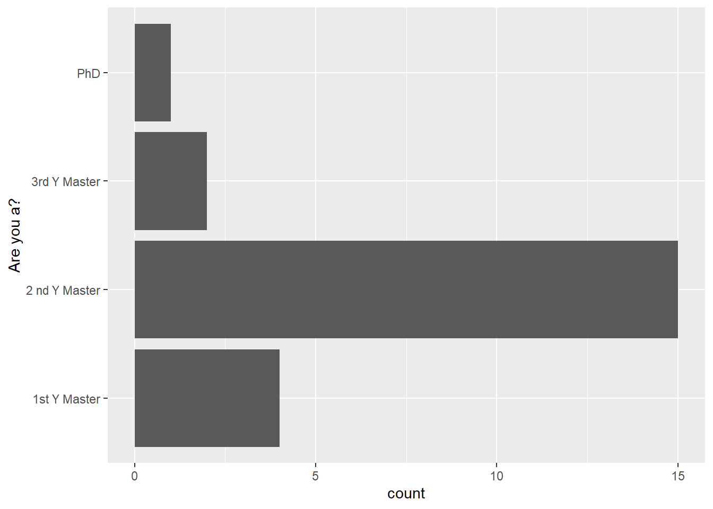
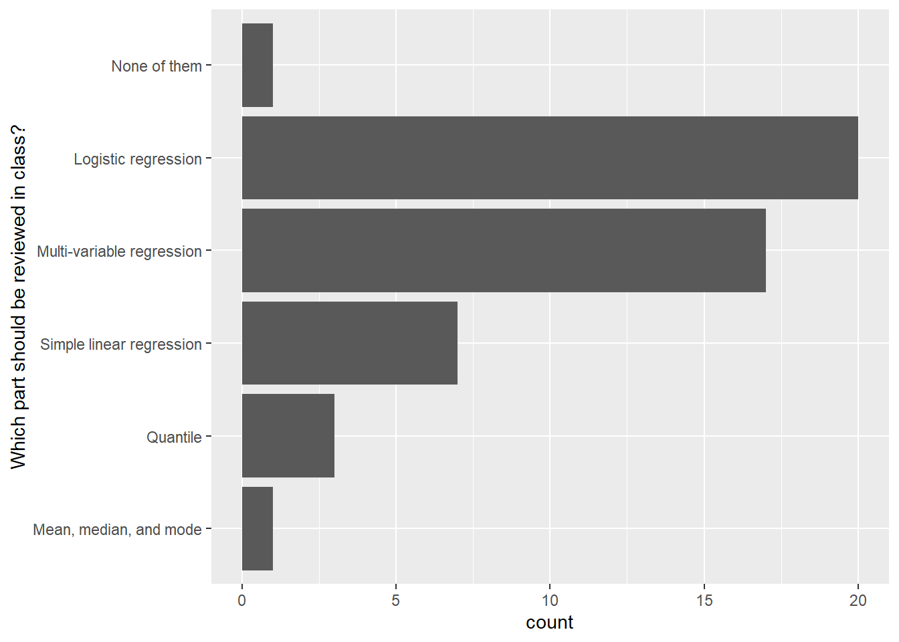
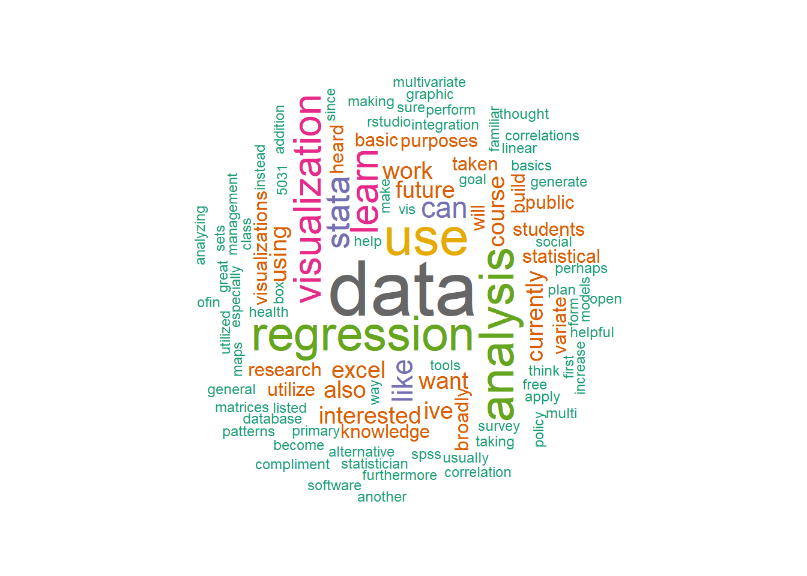

PA 5928 Data Management & Visualization with R (Updating)
2019-10-08
Chapter 1 Course Syllabus
1.1 Course Description
Introduction to RStudio software. Use of RStudio to carry out R file and related dataset management functions. Tools and techniques for data analysis and statistical programming in quantitative research or related applied areas. Topics include data selection, data manipulation, and data visualization (including charts, plots, histograms, maps, and other graphs).
1.2 Course Prerequisites
Introductory statistics (regression is not necessary); ability to create bar graphs, line graphs, and scatter plots in MS Excel; and familiarity with principles of data visualization.
1.3 Logistics
Instructor: Tao Tao, taotao@umn.edu
Location: HHH 85
Time: Starting 10/8: Tuesdays 9:45AM to 11:00AM
Office hours: Tuesday from 2:00 pm to 4:00 pm at HHH 271
Canvas: All course notes will be posted in this course website, but links will be provided on Canvas. Canvas will also be used to submit your in-class exercises, final project, and grades. So you only need to pay attention to Canvas to check everything!
1.4 Course Learning Outcomes
At the end of this course, students will be able to:
- Use RStudio to carry out R file and related dataset management
- Use R to work with different types of datasets and conduct basic data management
- Use R to visualize data with different types of plots
1.5 In-class exercise and final project
- An in-class exercise will be assigned during each class for the students to practice what they have learned. ChimeIn will be used in class to check the class performance in a anonymous way.
- The in-class exercises will be mostly finished during the class time, and students are still required to submit their codes on the same day with necessary notes to indicate their ideas.
- Students will use the knowledge from this course to complete a final project (data analysis for a interested research question and write a short report about it).
- Grading policy
- In-class exercise codes: 60%
- Final project: 40%
1.6 Course Schedule (Tentative)
| # | Date | Topic | Notes |
|---|---|---|---|
| 1 | 10/8 | Introduction to RStudio |
Uploaded |
| 2 | 10/15 | Introduction to R |
|
| 3 | 10/22 | Data manipulation with dplyr (I) |
|
| 4 | 10/29 | Data manipulation with dplyr (II) |
|
| 5 | 11/5 | Data visualization with ggplot2 (I) |
|
| 6 | 11/12 | Data visualization with ggplot2 (II) |
|
| 7 | 11/19 | R Statistics (I) | |
| 8 | 11/26 | R Statistics (II) | |
| 9 | 12/3 | Spatial visualization (I) | |
| 10 | 12/10 | Spatial visualization (II) |
1.7 Homework and projects collaboration and submission policy
- Students can discuss their works with other students, but must code and write up notes by themselves. Plagiarism is not allowed by the university policies. Please do be careful about this.
- In-class exercises and projects should be submitted through Canvas. If you cannot attend the class, please write a email to the instuctor including a valid reason before the class. Then you can make up the in-class exercise in the following one week after the class.
- When you communicate the instructor with emails, please include
PA 5928at the beginning of your title.
1.8 Some results from the online survey
1.8.1 Question 1

1.8.2 Question 2

1.8.3 Question 3
